📖 CAPÍTULO 1 – SEMPRE É SOL EM SOLARIA
#001
De novo.
A lâmina do dia já está aqui antes de mim — Solaria não espera ninguém. A luz entra pelo vão da cortina como quem paga aluguel do meu quarto. Não existe botão de soneca para um sol que mora no castelo.
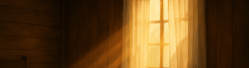
Respiro. Uma, duas.
Meu colchão tem o formato do meu corpo e, ainda assim, eu caibo menos nele a cada manhã. O teto é o mesmo, a rachadura em forma de asa também. As vezes fico viajando, pensando que talvez isso seja reflexo de uma dimensão que não consigo enxergar. E se for realmente uma asa? parando pra pensar bem, não parece uma asa.
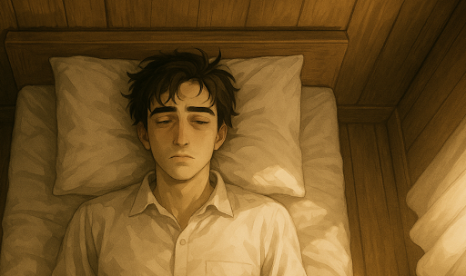
“Levanta.”
A voz é minha, mas soa como de outro. Funcionário da rotina, crachá invisível.
Levanto. Pés no chão frio. Penso nas nuvens — elas acordam? Duvido. Nuvem só existe. Eu ainda tenho que provar. Eu queria ser uma nuvem. Mas talvez até elas tenham rotina.
O som da cidade chega como água morna: pregões, risadas, sininhos, motores de barco. Tudo feliz por decreto. Lá fora alguém vende passeios de pégaso; aqui dentro meus olhos demoram a aprender a abrir.
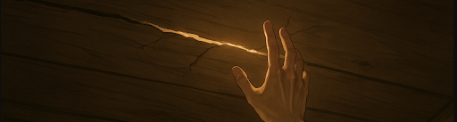
Não penso na minha mãe.
Penso. Corta.
Não hoje. Não agora. A cabeça é um armário que range quando encosta naquele nome.
A caixa está onde sempre fica.
Não encosto.
Ela respira quando ninguém vê — juro que respira. Um fio de pensamento tenta puxar a tampa, eu corto o fio com os dentes da vontade. Mais tarde. Nunca. Depois. Dentro dessa caixa carrego o motivo de ter sido expulso da família. Um dia conto essa história.
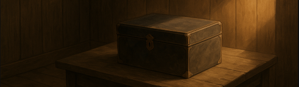
A luz encosta no meu rosto como quem unge. Não sinto nada.
Solaria me chama de filho, mas me cria como vizinho distante. Lá fora é feira, templo, girassol; aqui dentro é tempo parado em copo de vidro. Eu me mexo devagar para não acordar o que dói.
Pernas para fora da cama.
O chão diz bom dia. Eu não respondo.
Eu sei o que vem: espelho, água, roupa, a pasta que vou esquecer e lembrar, o caminho que já decorou meus passos. Mas por um segundo fico imóvel, tentando ouvir se o coração ainda bate. Bate. Discreto. Operário.
Ok.
Mais um dia claro.
Por dentro, o tempo continua nublado.
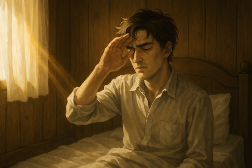
Ando pela madeira rangendo, cada passo parece me lembrar que estou sozinho aqui. Meu quarto tem cheiro de ontem, e de anteontem também. Desorganizado, mas não o suficiente para ser desculpa — só meio vivo, meio morto, como eu.
O espelho me espera na parede. Sempre me espera. Encosto as mãos na borda, olho para o reflexo. É o mesmo rosto, a mesma gravata que nunca fica bem ajustada, o mesmo cabelo que insiste em cair errado. Tento falar comigo, como se eu fosse outra pessoa:
“Vamos lá, Kranvoc. Você consegue.”
Mas a voz sai torta. Parece uma piada contada sem plateia. Os olhos no vidro não acreditam em mim. Eu sorrio, ou tento, mas o reflexo demora a acompanhar, e quando acompanha já virou careta.
Talvez o espelho me odeie. Talvez seja só honesto demais.
A madeira atrás de mim chia. O apartamento respira. Eu também, contra a vontade.
Escova, pasta, espuma. O gosto da manhã é sempre de nada. Banho rápido, água fria, corpo quente demais por dentro. Penteio o cabelo como quem varre folhas que voltam com o vento. Camisa, calça, sapato — o uniforme do dia que nunca muda.
A porta se abre, e eu quase acredito que vou sair inteiro desta vez. Corredor de madeira, cheiro de poeira que ninguém repara. Desço dois degraus, sinto o sol tentando me queimar a cara.
A pasta.
Claro que não. Sempre não, e eu ainda me avisei sobre.
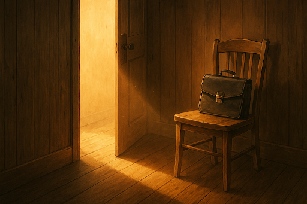
Volto. Piso no mesmo assoalho que reclama. O quarto me olha de novo, como se risse. A pasta está ali, paciente, debochada, na cadeira. Pego. Seguro firme. Suspiro.
Agora sim. Ou não.
A porta range, como sempre. O sol me engole inteiro antes mesmo de eu dar o primeiro passo pra rua. O calor escorre da calçada de pedra, o mesmo calor de todos os dias — o mesmo calor que nunca muda, porque em Solaria nunca muda nada.
Desço os degraus devagar, ajeitando a gravata que já começa a sufocar, e quase tropeço no próprio pensamento.
— Olha o sapato, garoto.
A voz vem de um canto qualquer. Um vizinho velho, ou talvez aquela senhora de sempre. Não importa. Olho para baixo: uma mancha de poeira marrom no couro preto. A rua inteira parece olhar junto.
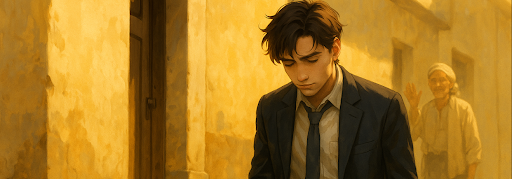
Não respondo. Nem levanto a cabeça. Só sigo, como se não tivesse ouvido. Mas ouvi. Sempre ouço.
O sapato, o jornal, a caixa... cada detalhe da minha vida parece ter olhos.
E eu sigo. Porque se eu parar, talvez eles falem mais.
O chão de pedra clara ainda quente de sol, mesmo sendo cedo. O terminal fervilha de passos, vozes, asas batendo no ar — sempre a mesma pressa, sempre a mesma bagunça organizada que parece respirar por conta própria.
Eu caminho até a fila do Barco 402, e todos parecem tão automáticos quanto eu. Rostos olhando para baixo, jornais dobrados debaixo do braço, vendedores gritando o preço de frutas que não existem mais nos mercados.
Atrás de mim, duas vozes baixas cortam o ruído:
— Você viu que Magno comprou briga com a Casa de Ferro, né?
Um silêncio denso, seguido por outra voz, quase sussurrada:
— Não é legal falar disso em público.
As palavras ficam suspensas no ar, como fumaça de cigarro que ninguém assume.
Eu olho para frente. Como sempre.
Nada muda. Tudo pesa.
E ainda assim, todo mundo sorri.
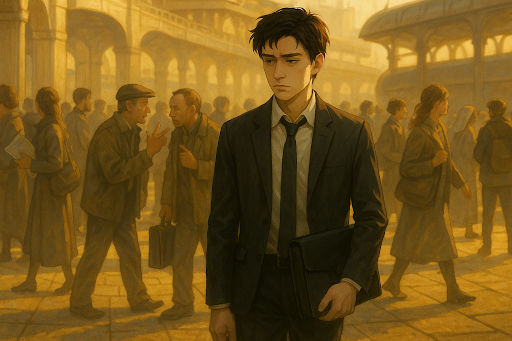
O barulho metálico do 402 chega antes dele aparecer. Correntes se soltam, o casco branco range contra o ar dourado, e a multidão se organiza sem precisar de ordem. Eu subo junto, sem pressa, como quem já sabe cada degrau gasto de cor.
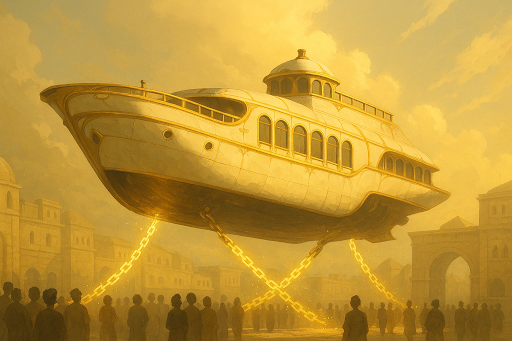
O vendedor de sempre me encara como se fosse novidade. Estendo a mão, moedas frias, e ele me entrega o Dia de Sol. O jornal cheira a tinta fresca e mentira antiga.
A manchete ocupa metade da página:
“Templo Luminis destruído por seguidores de Morsme.”
A foto é um soco de cinza no meio do dourado: colunas quebradas, fumaça ainda no ar, sacerdotes ajoelhados tentando juntar pó com as mãos.
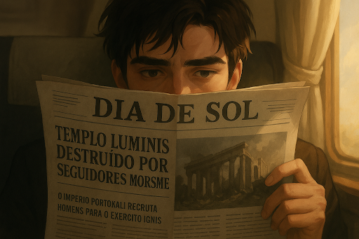
Leio devagar.
“Xavier Caeli, líder dos Investigadores de Solaria, está cuidando do caso. Dois suspeitos foram detidos.”
Xavier. Sempre Xavier. O nome que pesa mais que o sol.
Abaixo, em letras quadradas demais para serem neutras:
“O Império Portokali recruta homens para o Exército Ignis.”
Bandeiras, espadas, músculos. Tudo que não sou.
Fecho o jornal contra a perna, olho pela janela. O barco sobe, atravessa a luz. As nuvens se espalham como colchões que nunca toco. Eu queria ser uma delas.
E penso: eu queria ser um Investigador.
Mas sou só eu, com a pasta no colo e o céu inteiro rindo lá fora.
O vidro treme com o vento, e eu deixo o rosto encostar. A Cidade de Ouro brilha lá embaixo, muralhas fechadas como dentes que nunca se abrem. Só se olha, não se toca.
Atrás de mim, risadas presas em papel. Manchetes lidas em voz alta, fofocas dobradas em quatro. Todo mundo ri. Eu não.
Queria ser nuvem.
Flutuar sem destino, sem contas, sem portões.
Mas sou engrenagem.
Uma pequena, enferrujada, que gira só porque as outras giram.
Eu compro o jornal.
O rapaz do jornal compra comida.
O vendedor da comida compra um sapato.
O vendedor do sapato talvez compre outro jornal.
E a roda gira, gira, gira.
E eu me pergunto — até que ponto uma pessoa para e a engrenagem quebra?
Se eu parar, será que o mundo sente?
Ou simplesmente outro dente ocupa o espaço, e ninguém percebe que eu existi?
Eu olho para as nuvens. Elas nunca param.
Mas eu queria parar.
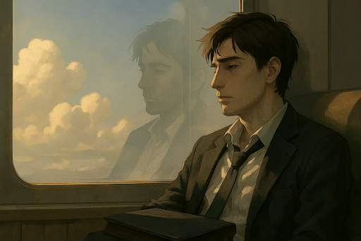
Olho em volta. Rostos mergulhados no jornal, gargalhadas automáticas, sorrisos que não chegam nos olhos. Estão todos vivendo num sonho — ou pior, numa coreografia que nunca ensaiaram, mas repetem sem perceber.
Talvez eu não queira ser nuvem. Talvez eu só não esteja encaixado no meu lugar.
Volto ao pensamento das engrenagens. Se uma roda se encaixa no dente errado, ela range, arranha, faz barulho. Machuca. Talvez seja isso. Talvez eu só esteja tentando girar no lugar errado.
E se eu achar o lugar certo, talvez eu funcione.
Talvez eu não precise ser nuvem, nem sol, nem templo destruído em manchete. Talvez eu só precise ser a peça que mantém algo em pé.
Mas o universo é cruel. Ele empurra a gente contra rodas enormes, e cada impacto sussurra: você é pequeno, insignificante, substituível.
Eu respiro fundo.
E por um instante penso: talvez ser pequeno seja só o primeiro passo até encontrar onde eu caibo.
O barco range, correntes cedem, e os pés se apressam para a saída. Eu não. Eu fico sentado até o último levantar, como quem alonga um respiro que não quer acabar. Engraçado… o melhor momento do meu dia é esse intervalo suspenso, quando não estou nem aqui, nem lá. Quando o barco não voa mais e eu ainda não pisei em nada.
Talvez isso não seja um bom sinal.
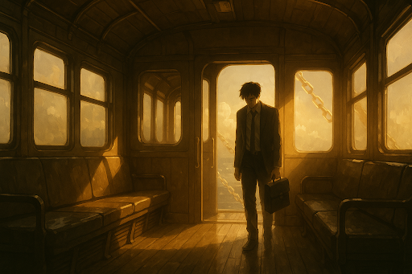
Levanto por último. Desço os degraus lentos, pasta firme na mão, o sol de Solaria me cegando de novo como se fosse a primeira vez. As ruas da Cidade de Prata se abrem diante de mim: comércio, estudantes, pregadores gritando bênçãos que não alcançam ninguém.
Eu sigo o mesmo caminho de sempre, o labirinto que já sei de cor. Os pés quase andam sozinhos, desviando dos vendedores, dos turistas, dos risos que não me pertencem.
E então, como sempre, paro na vendinha da esquina.
A porta range — todas as portas rangem nessa cidade — e o cheiro de madeira velha e fumo barato me envolve.
É aqui.
É sempre aqui.
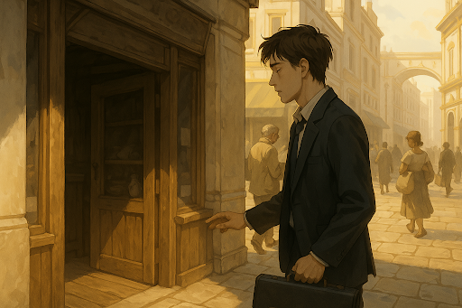
O sino velho da porta toca quando entro. Sempre o mesmo som, sempre o mesmo cheiro de madeira e fumaça barata. Mikhael está lá atrás do balcão, como se nunca tivesse saído dali.
Ele me olha como quem já sabe a conversa antes de começar.
— Você ainda está nessa faculdade, Kranvoc? — diz, sorrindo com aquele ar de tio que sempre tem uma piada escondida. — O mundo é grande demais pra você se trancar em sala de aula.
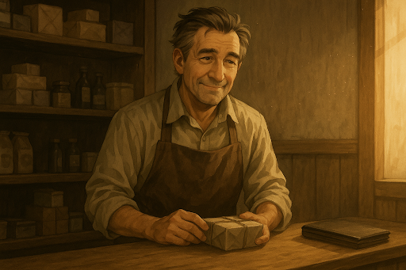
Pouso a pasta no balcão, respiro.
— Ser mago é útil. É respeitado. É o que mantém a cidade funcionando.
Ele balança a cabeça, arrumando uns maços na prateleira quase vazia.
— Respeito não enche o coração, garoto. Se você não seguir o que gosta, vai acabar vivendo a vida dos outros.
— Seguir o coração não paga conta — respondo automático, sem pensar. Minha voz soa mais cinza do que eu queria.
Mikhael ri, mas com os olhos sérios.
— Engraçado… no fim das contas, é o coração que paga tudo.
Fico em silêncio. Ele sempre vence essas discussões, mas eu finjo que não. Pego meu maço, seguro firme como se fosse escudo.
— Até amanhã, Mikhael.
— Até amanhã, garoto. Um dia você me entende.
Saio. O sol me golpeia de novo, como se fosse o mesmo de ontem. Talvez seja.
Ando pelas ruas da Cidade de Prata. O chão de mármore polido reflete o sol como se fosse ouro líquido escorrendo, mas não é ouro — é só reflexo. As casas ricas me cercam, cada uma maior que a outra, fachadas com colunas importadas, jardins de flores encantadas que nunca murcham. O brilho não é delas… é do dinheiro que respira por trás das paredes.
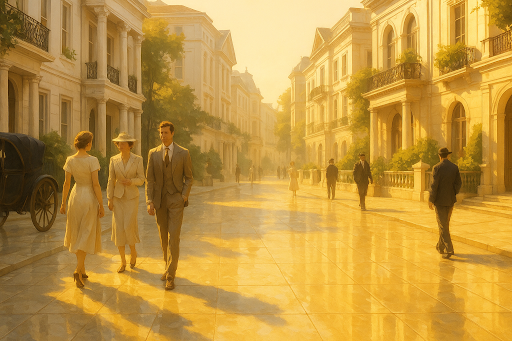
Dinheiro. Meritocracia. Palavras que repetem na minha cabeça como eco.
Sempre dizem: “quem se esforça vence”. Uma piada. Se fosse assim, os trabalhadores da praça estariam todos milionários. Não… não é esforço. É sorte. É estar no lugar certo, na hora certa.
Eu penso nos Zovet. Meu sobrenome. Minha família. Eles só passaram a existir na boca da cidade a partir do meu avô. Ele não foi mais forte, nem mais inteligente. Só teve a sorte de oferecer o tecido certo, quando todos precisavam. Uma onda. Ele surfou. E pronto: nobreza aceita, convites de casamento, mansões construídas.
E eu? Sou herdeiro disso. Vivo a consequência do acaso de um homem, não o mérito de muitos.
Meritocracia? Não. Oportunocracia.
É isso. A cidade inteira se move como engrenagens de vidro. Não vence quem é o melhor. Vence quem acha a brecha.
E eu ando até a Vicente Argentum pensando que talvez eu só precise achar a minha.
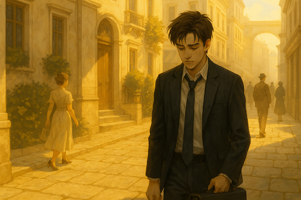
O corredor é silencioso, de pedra clara e madeira encerada. Há vitrais altos que deixam a luz atravessar em feixes dourados, pintando o chão com manchas coloridas. Passo por freiras que conversam baixo, padres que andam com livros apertados ao peito. Há uma reverência no ar, não a uma figura, mas a três forças maiores: Luz, Vida e Razão.
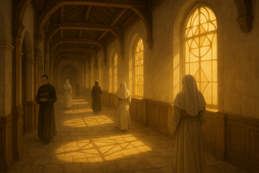
Penso no que sempre ouvi — que a Luz deu origem a tudo. Que, em seu brilho infinito, criou a Vida. Mas a Vida, desmedida, é sempre excesso; então a própria Luz deu à Vida um guarda, a Razão, para contê-la. Um triângulo que sustenta Solaria… pelo menos na teoria.
Entro na sala de filosofia. O ambiente é amplo, mas abafado, bancos de madeira alinhados. Sento perto da janela, como sempre, para poder escapar em pensamento.
Meu caderno se abre como um pequeno refúgio. A letra é limpa, quase delicada demais para alguém que se esforça em parecer sério. Nos cantos, rabiscos de roupas, detalhes de tecidos, caimentos, cortes. Herança da família que prefiro esquecer, mas que insiste em sair pela ponta da caneta. No meio das anotações, um nome sempre surge em letras maiores: Investigador.
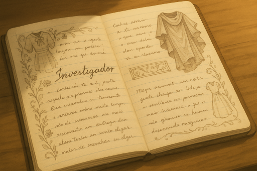
Às vezes desenho capas longas, brasões, botas firmes. Imagino Xavier Caeli passando por corredores assim, mas com outro peso, outro propósito. Ser como ele… esse é o único sonho que nunca consigo riscar do papel.
A voz do professor me arranca desse mundo secreto:
— Conhece-te.
A palavra ecoa como se fosse dirigida só a mim, embora dita à sala inteira. Me pego erguendo os olhos, como se tivesse sido pego em flagrante.
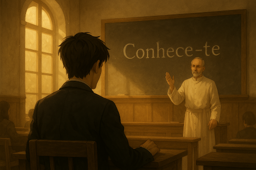
O professor anda devagar pelo espaço entre as fileiras, a batina roçando no chão encerado. A palavra “Conhece-te” ainda brilha no quadro como se tivesse sido escrita a ferro.
— Muitos acreditam que magia é apenas gesto, palavra ou fórmula. Mas nenhuma chama acende, nenhum feitiço se sustenta, se o mago não souber quem o conduz. Conhecer o mundo é inútil, se não conhece a si mesmo.
Ele para no meio da sala, olha para todos, mas por um instante sinto que olha só para mim.
— O perigo, alunos, não está em não saber lançar magia. Está em lançar sem saber quem a lançou.
Um silêncio pesado toma conta. Até os que copiavam distraídos levantam os olhos.
O professor recolhe os papéis sobre a mesa e conclui:
— Se não souberem quem são, serão apenas recipientes de forças alheias. E recipientes… quebram.
A batina desliza de volta até a porta. Ele nos deixa com a palavra ainda ardendo no quadro, mais viva que ele próprio.
E eu fico ali, quieto, fingindo que tomo notas, mas na verdade tentando entender se essa provocação é sobre magia… ou sobre mim.
De novo o barco. De novo o sol. Sempre o sol.
Encosto a testa na janela fria, tentando achar algum frescor onde só existe calor e claridade. As nuvens deslizam lá fora, iguais às da manhã, como se nada tivesse acontecido no intervalo entre ida e volta. Talvez nada tenha acontecido mesmo — exceto em mim.
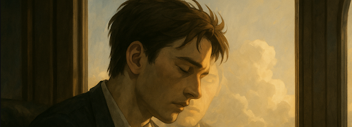
Conhecimento. O professor falou como se fosse uma chave universal. Mas o que é conhecimento? É decorar runas? É dominar fórmulas? É saber o nome das flores que se abrem nos jardins da Cidade de Prata? Ou é olhar para dentro, para essa rachadura que se abre em mim toda vez que acordo?
Como eu posso não me conhecer? Eu que passo horas pensando, que encho páginas com reflexões e desenhos. E, mesmo assim, talvez eu só não saiba que tipo de engrenagem eu sou nessa máquina absurda que move Solaria.
Se eu realmente não estou feliz com essa vida, com essa faculdade… por que defendi tudo com tanta força quando Mikhael questionou? A voz dele ainda ecoa: “Siga o coração, Kranvoc”. Eu disse não. Eu falei sobre utilidade, sobre respeito, sobre o certo. Mas agora parece só uma defesa automática, como um reflexo de alguém que não sabe quem é.
O barco balança levemente, as correntes rangem. Ele para. Fico esperando todo mundo sair. É sempre assim. Eu, por último, sozinho no corredor vazio, como se a transição fosse o meu verdadeiro lar — esse espaço entre um lugar e outro.
Volto para casa com o mesmo sol de sempre. Sempre é sol em Solaria. Às vezes penso que até a sombra aqui cansa.
Tiro os sapatos, largo a pasta no canto. Vou direto pro banho.
A água escorre pelo meu rosto, mas não limpa o que sinto. Só repete o ciclo. Quem eu sou de verdade? Quem eu seria se não fosse Kranvoc Zovet?
O nome carrega peso. Zovet significa riqueza hoje. Mas antes? Antes era apenas pó. Um nome vazio que alguém um dia decidiu valorizar.
Fecho os olhos e escuto minha mãe de novo, tão nítido como se estivesse ali:
— Você é um demônio na minha vida.
— Você é um atraso.
Palavras gravadas como marcas invisíveis. Será que todo mundo carrega cicatrizes que não se veem?
Me seco devagar. O silêncio da casa é pesado. Deito na cama. O teto de madeira me encara de volta.
“Quem eu sou?” — penso, repetindo a pergunta como um feitiço sem resposta.
O sono vem. Não como descanso, mas como fuga.
Abro os olhos. O teto de madeira é o mesmo, as cortinas deixam passar a mesma luz dourada, mas algo parece... fora de ordem.
O ar da manhã não entra do mesmo jeito. A cama parece ter me prendido, como se eu tivesse acordado em outro lugar igual ao meu.
Às vezes eu só queria sentir o que sinto quando estou dormindo — penso, com a cabeça pesada. No sonho, tudo parece mais certo, mais meu. Aqui fora, é como se eu fosse uma peça que não cabe em lugar nenhum.
Levanto devagar, meio tropeçando nos próprios pensamentos.
Rotina. Sempre rotina. Mas hoje... não sei se vou conseguir seguir no mesmo passo.
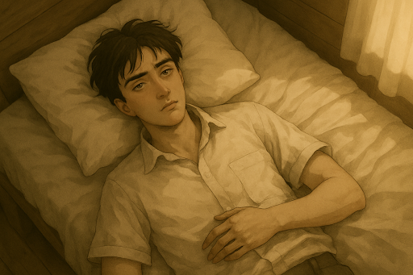
Levanto sem banho.
Só levanto.
A madeira range embaixo do pé e, por um instante, parece reclamar mais alto que ontem.
A janela me engole antes do espelho. Não devia, mas engole. O sol já está lá fora — esse sol que nunca perde, nunca cansa, nunca erra a hora. Eu olho direto pra ele, como se fosse possível encarar um inimigo que nem pisca.
Seguro a pasta. Estranho, porque lembro de sempre esquecer. Mas ela está aqui, firme, preta, pesada.
O uniforme entra no corpo sem nem passar pela água. Camisa, calça, gravata — o ritual pela metade. O cheiro da noite ainda cola em mim, e eu saio assim mesmo.
O corredor me espera.
Mas hoje não é só o corredor.
Tem algo no ar — como se a madeira tivesse crescido farpas invisíveis.
A luz que entra da porta da frente parece atravessar a poeira mais densa, como se a casa tivesse ficado semanas fechada.
Dou dois passos e sinto a respiração diferente, como se alguém tivesse passado por aqui antes de mim.
Fico parado, pasta na mão, gravata mal ajeitada.
Não sei o que está fora do lugar — eu ou o corredor.
Olho para baixo.
Nada.
Pé no chão frio, descalço.
A pasta na mão, a gravata sufocando o pescoço, mas os sapatos… ficaram pra trás.
— Claro. — digo sozinho, como se fosse piada que ninguém riu.
Volto dois passos, o quarto me encara com aquele ar de deboche que só as paredes sabem ter. Os sapatos estão onde sempre estão, quietos, pacientes, como se tivessem decidido me testar.
Calço devagar, amarrando as cordas com força desnecessária. Quase como se fosse um duelo perdido antes de começar.
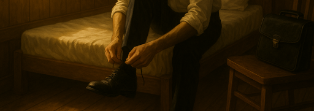
E saio outra vez.
Agora completo, agora pronto — ou fingindo estar.
A rua ainda respira como sempre, mas hoje parece que cada som ecoa mais do que devia.
— Cuidado com essa pasta. Está aberta.
A voz vem de trás, de alguém que não reconheço — ou talvez nem exista. Fecho o fecho da pasta com força, como se quisesse trancar junto um pedaço de mim ali dentro. Aperto firme contra a perna e sigo.
O terminal.
As pedras claras, o mesmo sol de sempre, o mesmo espaço onde sempre tem fila, sempre tem gente.
Mas hoje... vazio.
Olho pros lados.
Nenhum vendedor gritando preço de fruta que não existe, nenhum jornal dobrado no braço de ninguém, nenhuma conversa sobre Magno ou casas que desabam.
Só silêncio.
Meu coração dá um passo antes de mim.
E eu penso: mais um dia. Tudo igual. Ou quase igual.
O barulho metálico chega sem aviso. Correntes se mexem, o casco branco e dourado aparece no ar. Mas não há pressa, não há risos, não há o caos de sempre. Só o barco parado, respirando como fera adormecida. Nem é o mesmo barco que faz essa linha. Mas ok.
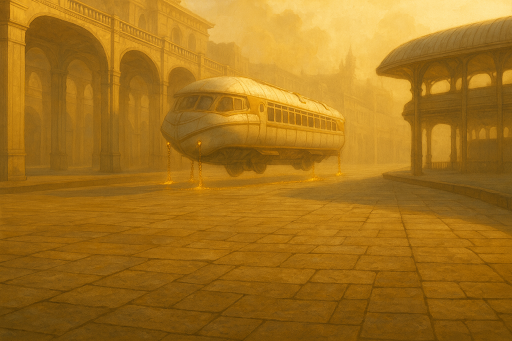
Subo.
Os bancos estão todos vazios. O corredor é só meu.
E o vendedor de jornal… não existe.
O banco da janela me chama como sempre, mas agora parece maior. Encosto a pasta no colo, como se ela fosse uma âncora.
Tudo igual.
Ou quase igual.
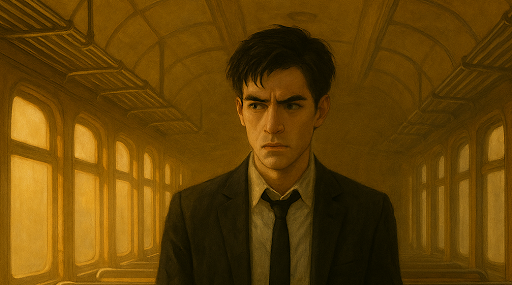
O banco é frio, a janela quente. O vento passa, mas não entra — parece rir de mim. Apoio a cabeça no vidro e penso: como é possível viver dentro de mim todos os dias e, mesmo assim, não me conhecer?
Se eu me conhecesse de verdade, entenderia os meus motivos. Entenderia porque digo sim quando quero dizer não, porque defendo o que me sufoca, porque fecho os olhos quando o sol insiste em me mostrar que estou aqui.
Eu passo a vida olhando para fora: nuvens, ruas, portões, risos que não são meus. Esqueço que também sou algo a ser visto. Que também sou pessoa. Que também sou engrenagem.
E talvez seja isso: se eu entender qual engrenagem eu sou, saberei onde encaixo. Saberei para que giro. E, quem sabe, saberei parar sem medo de quebrar o mundo.
O barco range ao parar. Eu desço devagar, os degraus parecem mais fundos do que antes.
“Quem eu quero enganar?” penso. Se eu parar, o mundo não para. Nunca para. Sempre haverá outra engrenagem para girar no meu lugar. Não foi assim na minha família?
No fim, eu era só um dente a mais na roda. Faltou? Trocaram. Seguiu girando.
Será que faço falta pra alguém? Será que se eu sumir do nada, alguém sentiria?
Evito sempre esse tipo de abismo — ele engole rápido demais. Mas hoje… hoje o dia parece torto, como se a sombra estivesse mais comprida que o sol.
Mikhael está na porta, varrendo devagar, como se o chão pudesse esperar.
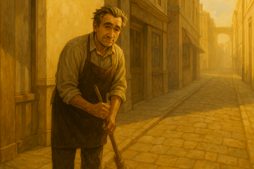
— Garoto, o que você está fazendo aqui?
— Como assim? — minha voz sai mais áspera do que devia.
Ele encosta o cabo da vassoura no ombro, olha pra mim como se eu tivesse perdido a última página do calendário.
— Hoje foi decretado feriado. Imagino que você não vai ter aula.
— Que? Isso é impossível. Eu sempre olho a agenda.
— Foi de emergência. Aconteceu algo na família real, lá na Cidade de Ouro. Mas ninguém sabe direito o que.
As palavras ficam no ar, como poeira que o sol não deixa esconder. Eu olho em volta: ruas mais vazias que o normal, pregões calados, até os girassóis parecem estranhos.
— Mas essa cidade… nunca para… — digo baixo, sem esperar resposta.
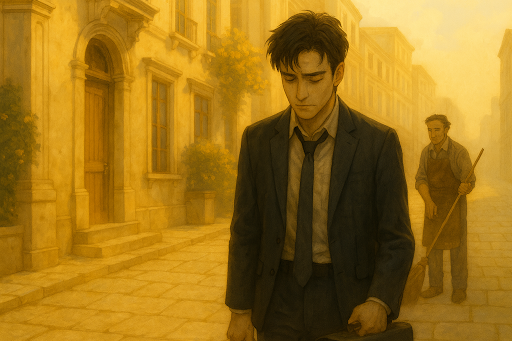
E o silêncio concorda comigo.
O que será que aconteceu? Essa cidade nunca para.
Ou pelo menos nunca parava.
Desde que Magno pegou a coroa… tudo errado. Guerra com os Tyran, decretos, paranoia pingando das muralhas como suor. Dizem que ele não dorme, que fala sozinho. Eu acho que ele só não sabe que engrenagem é.
Talvez seja isso.
Todo caos, de qualquer mundo, nasce da mesma raiz: não saber quem você é.
Será?
Já pensou?
Entro na biblioteca.
O ar muda, o peso do sol fica do lado de fora. Silêncio cheio de vozes antigas. Estantes que respiram, mesas marcadas de tanto carregar pensamentos de outros.
Eu paro.
Por um segundo acho que até o universo parou junto comigo.
Na realidade… eu nem sei como preencher esse dia.
Todo dia é igual, um carimbo repetido no meu calendário invisível.
E agora, de repente, me forçam a achar algo pra fazer.
Um dia livre… que não é livre.
Meus pés me levam sozinhos, como se soubessem mais que eu. Corredores longos, prateleiras empilhadas até o teto, cheirando a pó e segredo.
Placas douradas me dizem onde estou: FILOSOFIA e RELIGIÃO.
Claro. O destino tem senso de humor.
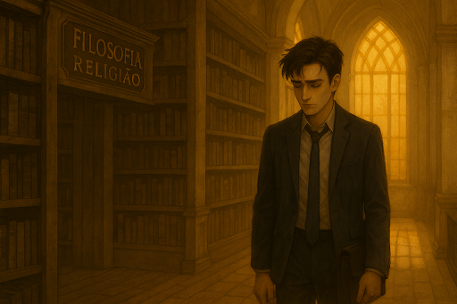
E eu penso em Deus.
Não o Deus dos outros — o Deus que fica na minha cabeça, desenhado em mil versões que não fecham nunca.
Será que existe?
Ou será que Deus é só o reflexo de alguém tentando se conhecer e errando no cálculo?
Se a Luz criou a Vida e depois inventou a Razão pra conter a bagunça, então até a própria Luz teve medo do que fez.
Então… Deus também não sabia quem era?
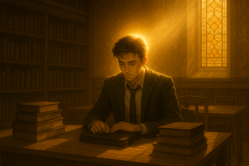
Abro o livro pesado, capa gasta, letras douradas ainda brilhando como se fossem feitas do próprio sol. Sefer Lux. A religião oficial de Solaria. A história que todos repetem como mantra.
A luz criou a vida. E para contê-la, criou a razão.
Repito em silêncio, como se fosse oração, mas soa como receita de bolo.
Vida e razão se apaixonam. Geram bondade.
Eu leio. Eu rio por dentro. Bondade é invenção de pregador, não de deuses.
Deus, a Luz… talvez seja só a Luz tentando se entender.
Será que Ele sabe que engrenagem é? Já pensou? Um deus confuso, sentado no escuro, olhando o próprio reflexo.
Viro páginas sem pressa. O tempo escorre mais lento aqui. Alívio. Não preciso fingir que presto atenção em um quadro negro. Não preciso responder a chamada. Aula suspensa… talvez seja a primeira vez que sinto que posso respirar.
Mas respiro pensando: eu não quero ser mago.
Mago é seguro. Carteira assinada pelo governo. Feitiço estável, salário na mão, comida no prato.
Mago não é sonho. É trincheira.
Sonho… sonho seria outra coisa. Investigador, talvez. Ou nada. Talvez só nuvem.
Mas lembro da casa. Do antigo lar.
Meu avô morrendo e levando com ele a espinha dorsal dos Zovet.
Minha mãe… não sei se ainda posso chamar de mãe. Narcisista, seca, alma vendida. Se é que tem alma.
Ela vendeu os tesouros da família, barganhou com gente podre, se ajoelhou por poder.
Me expulsou. Me jogou na rua.
E eu, sem nada, aprendi que fome não é poesia.
Por isso ser mago parece escolha certa. Parece… mas não é. É só a muralha que me impede de cair outra vez.
O livro brilha sob a luz do vitral. Mas quanto mais eu leio, mais sinto que essa história não foi escrita para mim.
As horas escorrem entre páginas. Bondade, Poder. Dois irmãos brigando em fábula de criança. Poder vence, mas só porque Bondade se deixa cair. Que tipo de ensinamento é esse? Que bondade verdadeira é fraqueza, ou que poder nunca percebe quando é manipulado?
Então a Luz resolve encarnar. Harmonia. Desce dos céus como se fosse solução final. Mas é só mais um capítulo inventado. Uma conciliação que nunca vi acontecer de verdade.
Fecho o livro. Peso estranho na mão, como se fosse pedra, não papel. Vou até a mesa da bibliotecária. Assino meu nome. Letra firme, mas cada traço parece mentira. Kranvoc Zovet. Zovet, o sobrenome que não devia ser meu, mas é a única coisa que me mantém de pé.
Saio da biblioteca. O sol bate no rosto, cega por instinto. A cidade continua dourada, mas agora tudo parece teatro de marionetes. Gente vendida a Magno, como minha mãe. Títulos, medalhas, brasões — fantasia com gosto de ferro.
Eu penso: talvez tudo seja fantasia. Talvez até eu.
Paro de andar. Olho pra frente.
A bandeira.
IGNIS. Vermelha como sangue fresco. O brasão de um carneiro, chifres erguidos, desafiando o céu.
O pano balança no vento como se fosse vivo, como se risse de mim.
“É isso que reina”, penso. Não bondade, não harmonia. Só poder pintado de vermelho.
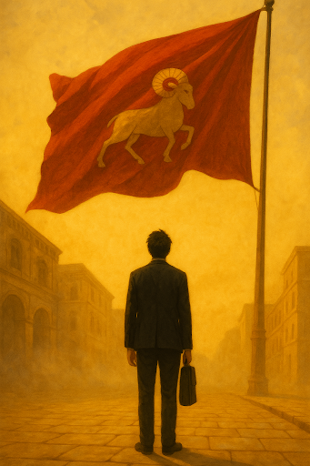
O carneiro ainda lateja na minha cabeça quando piso no terminal. Parece que a bandeira me seguiu, tremulando dentro da memória. Poder venceu, Bondade perdeu, e eu espero que a tal Harmonia desça logo, porque aqui embaixo não sobra ar.
O barco 402 já está quase cheio — mas não aquele cheio habitual de vozes que me engolem. Hoje são poucos, cansados, voltando de cantos que parecem ter esvaziado junto com a cidade. Me encosto na fila, seguro a pasta. Sempre a pasta.
Atrás de mim, duas vozes:
— O rei está em reunião. Dizem que piorou contra os Tyran.
— Solaria vai vencer. Solaria sempre vence.
Essa última frase ficou me roendo. Claro que Solaria sempre vence. Não importa quem caia, quem sangre, quem perca. A cidade é o tabuleiro, o resto são só peças descartáveis. Os Ignis podem até ruir, mas o sol continua aceso. Solaria não perde nunca, porque todos já lutam por ela sem nem saber.
Subo no barco. O vento quente me lambe a cara como sempre. Sento na janela, como sempre. Mas hoje o reflexo do vidro parece mais sincero que meu rosto.
Penso no que me espera. Escritórios fechados. Pilhas de papel. Homens de batina discutindo sobre “ordem” enquanto a guerra mastiga pedaços da fronteira. Magos, todos iguais, fiscalizando quem pode e quem não pode acender uma vela. Talvez seja isso que eu vá ser. Um selo, uma assinatura, um carimbo.
Seguro o banco com força. Talvez seja só vaidade. Meu ego que não aceita ser mais uma engrenagem. Um número no Ministério. Uma sombra dentro do castelo. Mas também… quem eu quero enganar? O seguro sempre vence o incerto. A coragem nunca paga a conta.
Ou será que me falta coragem?
Olho pela janela. O céu é enorme, mas eu continuo apertado dentro de mim. O reflexo devolve um estranho que ainda não sei nomear. Se conhecer é difícil. Talvez impossível. Talvez até para a própria Luz.
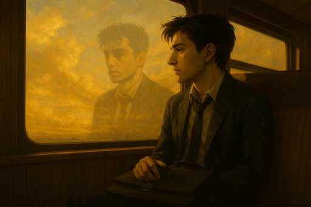
Penso alto, mas só dentro:
“Eu entendo você, senhor Luz. Você também criou um universo só pra se entender.”
O barco range, correntes soltas, o mundo de novo me chama de volta. O destino chega. Eu também — embora ainda não saiba pra quê.
Entro em casa. Larguei o livro na cama. Banho. Água quente na pele. Sempre igual, mas hoje não. Hoje veio meu pai.
Lembro até os cinco anos, depois... silêncio. Ele sumiu. Eu o entendo, afinal. Quem ficaria com uma mulher como minha mãe? Nem eu teria ficado.
Mas por que esse pensamento agora? Do nada. Como se alguém soprasse dentro da minha cabeça. É isso... às vezes a gente só aceita o jornal diário da mente, lê sem questionar, acredita que é notícia legítima. Mas... quem escreve esse jornal? Quem é o redator do meu pensamento?
Me olho no espelho, a água ainda pingando: preciso parar com filosofia, estou ficando louco.
Saio. A caixa. A maldita caixa de madeira. Sempre ali. Sempre olhando pra mim. Foi ela que me expulsou da família.
Deito. Pego o livro. Harmonia. Viva o novo rei.
Leio sobre Harmonia. Os três filhos: a Beleza, o Oculto, o Intelecto.
Penso. Penso demais. No fundo é sempre a mesma engrenagem rodando. Eu, ela, todos.
Olho a rachadura no teto.
E sem perceber... adormeço.
Acordo.
O quarto está cinza. Não é a parede, não é a cama. É o ar. O dia parece cinza. Neblina na janela, cobrindo tudo como se tivesse apagado o mundo.
— Que coisa... estranha.
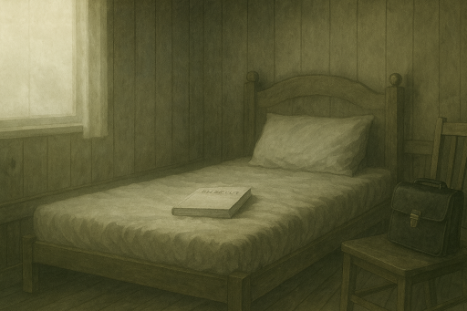
O livro ainda na cama, me olhando. Como uma amante que não dormiu. Eu estendo a mão e seguro.
Beleza, Intelecto e Oculto.
A Beleza inocente, amada pelo pai. O Intelecto, responsável, orgulho.
E o Oculto… nunca visto. Um segredo do próprio pai.
Fecho o livro.
Isso significa alguma coisa ou é só mais uma fábula?
Levanto. Hoje me lembro da pasta, dos sapatos, de tudo. Cada peça no lugar.
Saio.
Calçada silenciosa. Mikhael não fala, ninguém fala.
A cidade respira mas não responde.
— Realmente, um dia atípico em Solaria.
O barco 402, sempre o mesmo, o mesmo ranger, o mesmo corredor. Sento na janela, como sempre, como se fosse meu lugar marcado pelo destino.
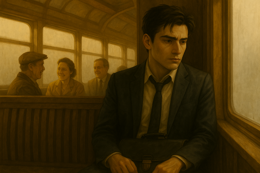
Um jornal. Pego da mão do vendedor sem pensar, quase automático.
“Professor da faculdade Vicente Argentum é demitido após acusações de envolvimento com renegados TENEBRIS.”
Meu professor. Filosofia. O mesmo que disse “Conhece-te”. Agora nome sujo, riscado, cuspido em letras de chumbo.
Olho a janela. Neblina. Neblina engolindo o céu, engolindo tudo.
E essas pessoas. Malditas pessoas. Sorrindo, rindo, falando como se o reino não estivesse rachando sob seus pés. Como se não houvesse nada.
Um gosto amargo sobe. Por um instante sinto. Sinto quase raiva.
Quase.
Mas me seguro. Fecho os olhos. Seguro. Porque se eu soltar, o que sobra de mim?
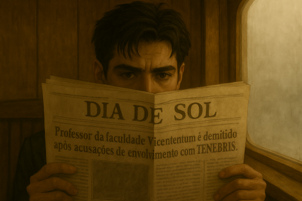
A descida é lenta, os degraus soam mais pesados que o normal. O jornal ainda quente de tinta escorre da minha mão.
A vendinha. Fechada. Mikhael não varre, não sorri, não existe.
A neblina engole as ruas, cinza sobre cinza, como se alguém tivesse apagado Solaria com borracha.
Sento na calçada fria, o couro da pasta arranha meu joelho.
“Tenebris…”
Repito como se fosse maldição ou senha esquecida.
Reis. Reis que já foram tudo. Reis que hoje são nada.
O jornal é rápido em reescrever destinos: ontem majestade, hoje renegado.
O tempo é essa máquina cruel — um segundo você é engrenagem central, no outro é ferro velho.
Meus olhos caem num quadrado menor, quase escondido entre anúncios de feiras e decretos:
“Ordem Mayhem recruta novatos.”
Eu piscaria para limpar os olhos, mas a frase permanece.
Leio outra vez.
“Ordem Mayhem recruta candidatos para sua equipe federal de investigadores.”
Investigadores.
Meu coração não bate mais forte — ele esquece de bater.
Sonho? Armadilha? Ou é só destino me encarando direto na cara?
Levanto. As pernas obedecem sozinhas.
Olho o céu cinza como se buscasse sinal — só encontro silêncio.
Talvez seja isso. Talvez essa seja minha chance.
E sigo, jornal amassado na mão, passos duros rumo à escola, mas cabeça longe — como se já fosse parte deles.
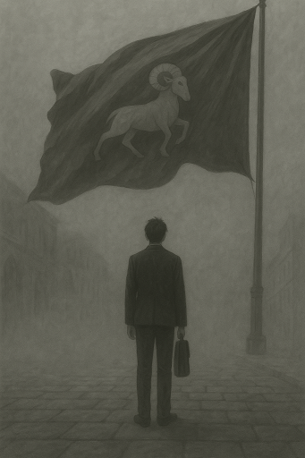
Não sei. Não sei nada — nem do rei, nem da guerra, nem da cidade que insiste em respirar fumaça como se fosse ar.
Mas eu sei disso: Solaria está cinza. Cinza como nunca esteve. Cinza como eu sempre estive.
E, contraditoriamente, eu estou feliz.
Talvez porque, pela primeira vez, o mundo parece combinar comigo. Talvez porque, se até Solaria pode perder o brilho, então eu posso ter um espaço aqui dentro, mesmo sendo engrenagem torta.
Talvez… seja a minha chance.
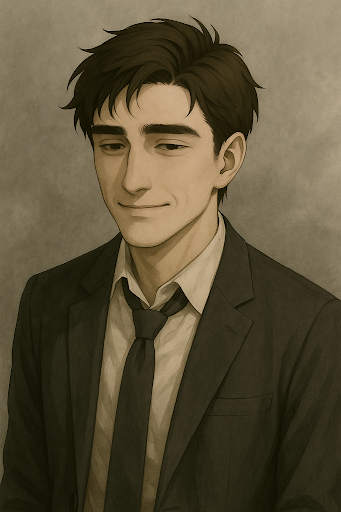
FIM
.
#002
EM BREVE